Compression at the Edge
If you only read one thing
- Dynamic, layer-aware quantization can shrink a model like GLM 5.2 by 86% (to 250GB) while recovering 76% of its original accuracy — naive uniform rounding would make it far dumber, not just proportionally smaller. (c1,c2)
- Deep Seek R1's release was the moment that made local quantization urgent industry-wide, because the reasoning model was too large to run locally without aggressive compression. (c3)
- A bigger model quantized to 4-bit tends to beat a smaller model at full precision even at matched disk size, but panelists warn newer hybrid/linear-attention architectures can pass ordinary benchmarks after quantization and still produce gibberish in real long-context production use. (c5,c6)
Daniel Han (Unsloth) explains that quantizing a 1.5-terabyte model like GLM 5.2 down to 250GB — an 86% size reduction — does not make it 86% dumber, because dynamic quantization selectively keeps important layers at higher precision. Their tests recovered 76% of overall accuracy despite the aggressive size cut.
“you can actually quantize it and shrink it to 250GB. Um so you can make it 86% smaller.”
▶ watch at 03:12“still recover 76% of all accuracy. Um so you so the trick for quantization is if you quantize the correct layers you will not make the model you know literally useless.”
▶ watch at 03:43
Han traces the panel's shared motivation back to Deep Seek R1, whose release proved reasoning models could work well but was too large to run locally without compression tricks.
“the biggest moment was Deep Seek R1. Definitely when it got released, it was quite dramatic for the world because we finally have some sort of like reasoning model that worked very well.”
▶ watch at 04:47
NVIDIA's model optimizer team describes NVFP4 as a microscaled format where every 16 elements share one 8-bit scaling factor, and explains that post-training quantization (PTQ) works out of the box for medium and large models (20B+ parameters), while smaller models need quantization-aware distillation to recover accuracy.
“In in the case of FP4, you choose 16 elements and you can share one scaling fac one one extra um FP8 number between these 16 elements.”
▶ watch at 16:53“for medium and large models PDQ works out of the box very easy relatively super easy to do.”
▶ watch at 30:51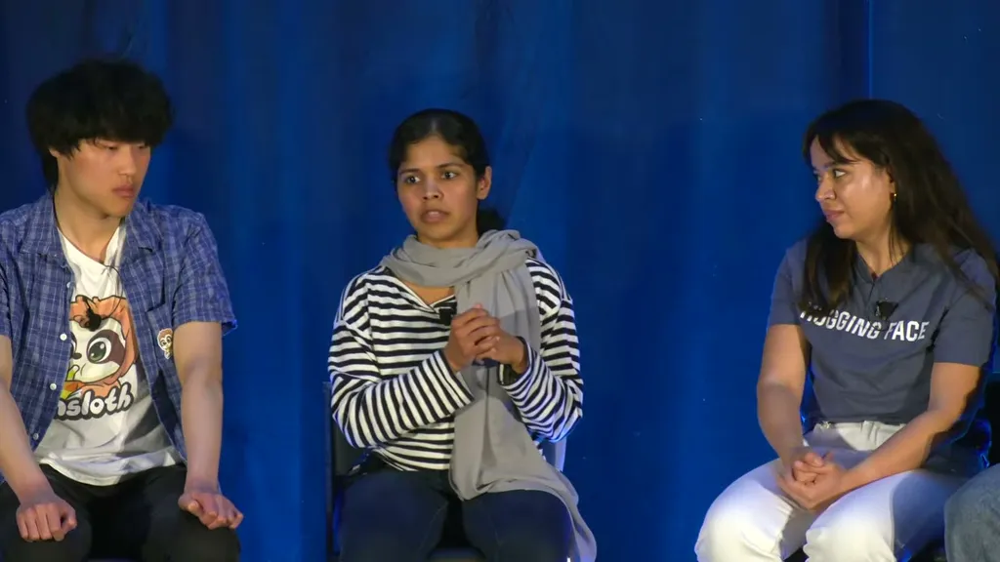
Research cited on the panel shows a large model quantized to 4-bit outperforms a smaller model kept at full 16-bit precision, even at matched disk size, implying the industry will keep training larger models and compressing them down. Han warns that newer hybrid and linear-attention architectures can pass ordinary benchmarks after quantization while producing gibberish output once tested on real long-context production tasks.
“the bigger model quantized to 4bit is actually much better um than a 35 billion 16 bit.”
▶ watch at 22:35“if you quantize the linear attention layers okay it looks like it's doing good but then when you do long context benchmarks you know when you actually use the model in real production it becomes gibberish.”
▶ watch at 36:33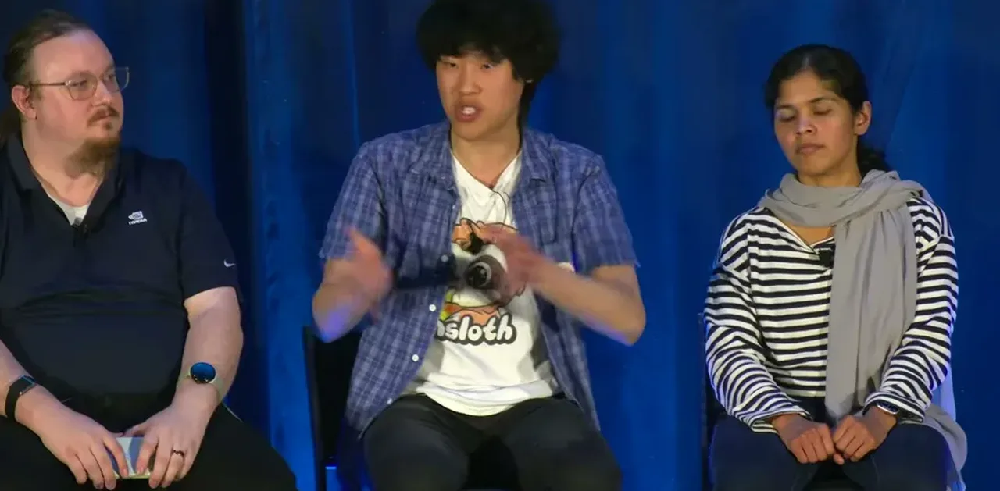
Panelists expect the frontier to move from weight quantization toward KV-cache compression and pushing intelligence onto phones.
“I see intelligence going to phones thanks to the quants and everything.”
▶ watch at 39:38
Commentary (ours)
Every compression claim on this panel comes from teams selling compression tooling (Unsloth, NVIDIA's model optimizer, Hugging Face, Ollama), so the accuracy-recovery numbers are best treated as vendor-reported until checked against an independent benchmark (ours).


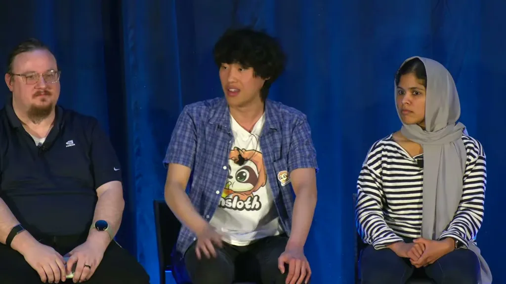
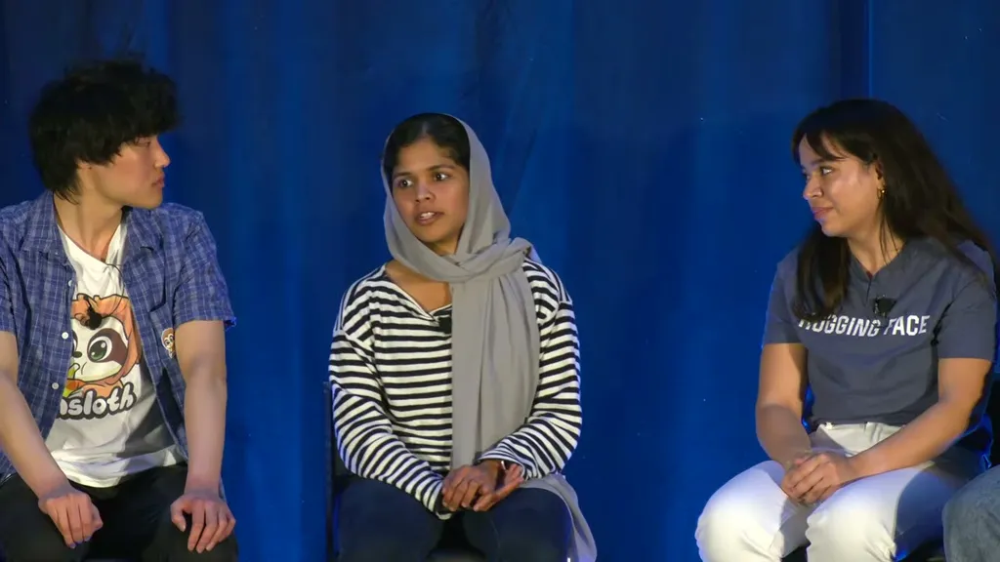
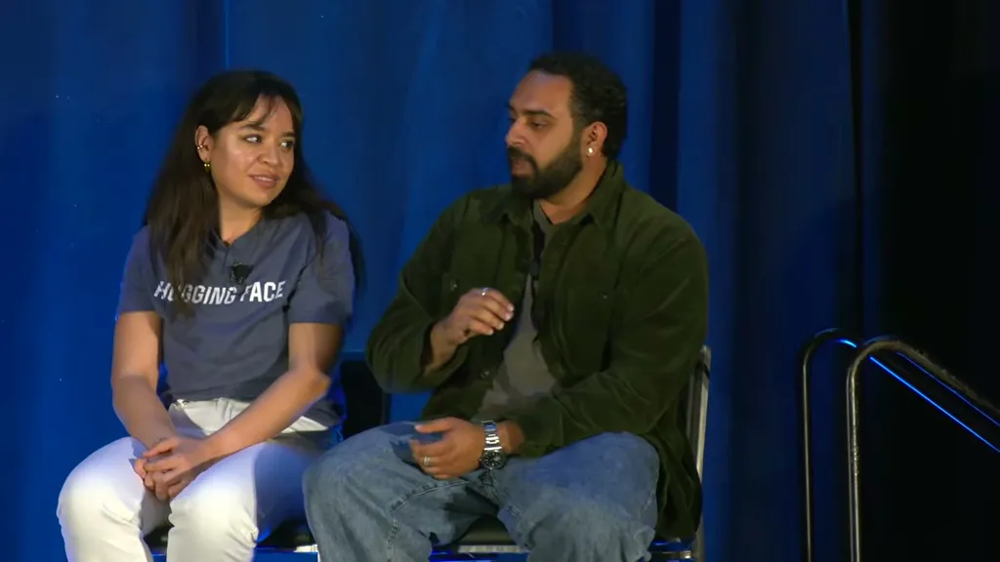
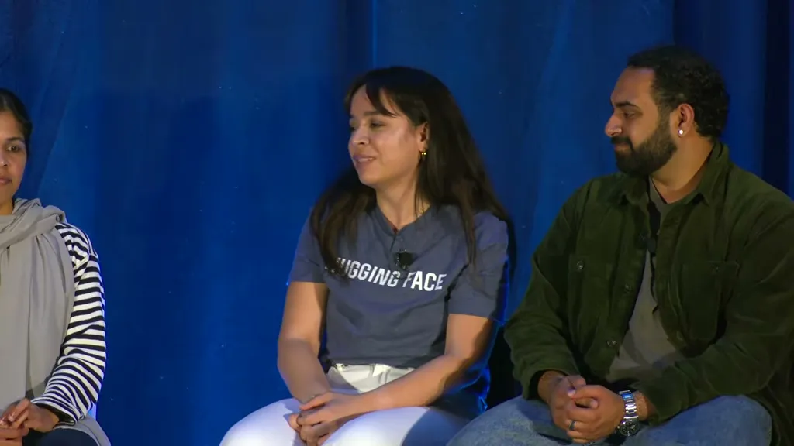
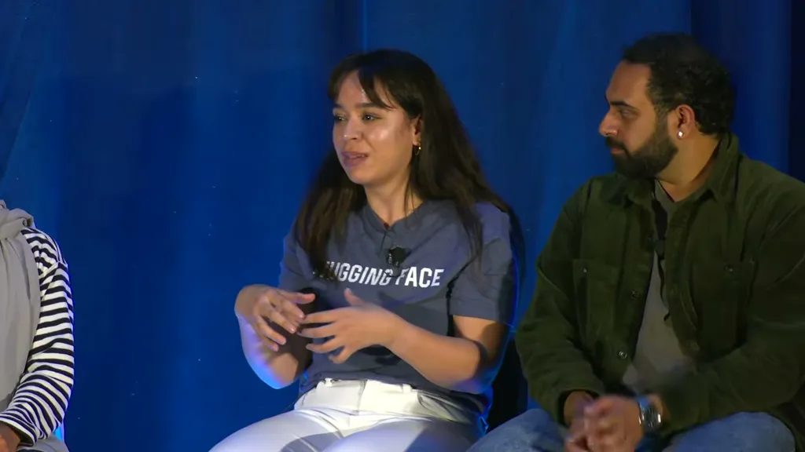
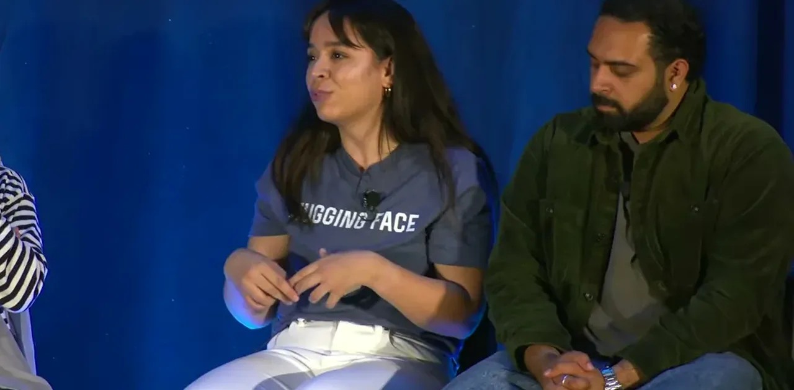
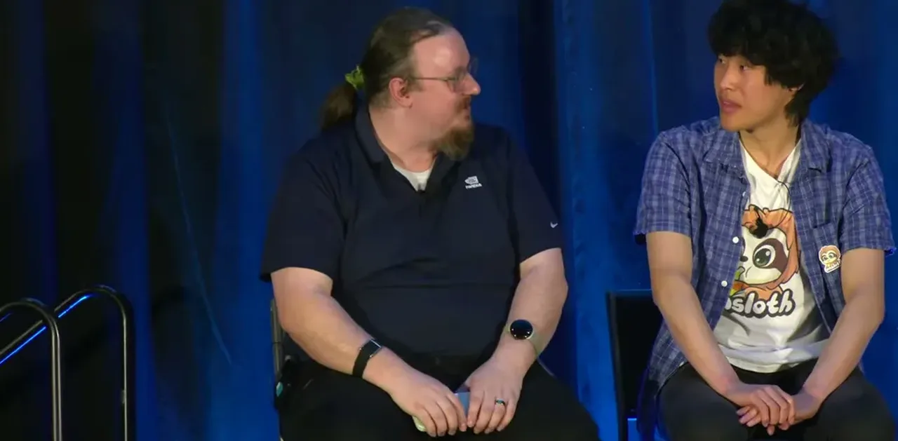
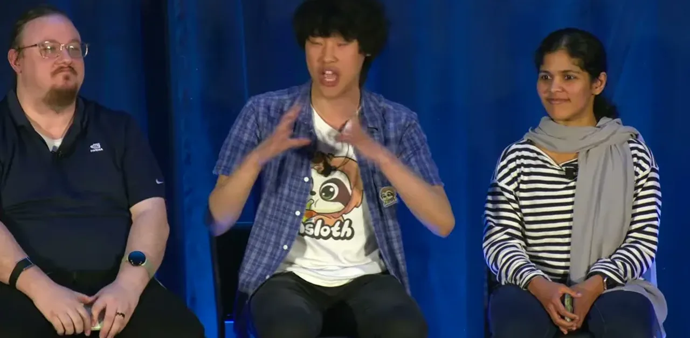
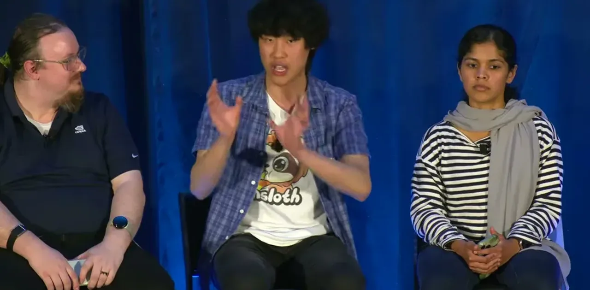
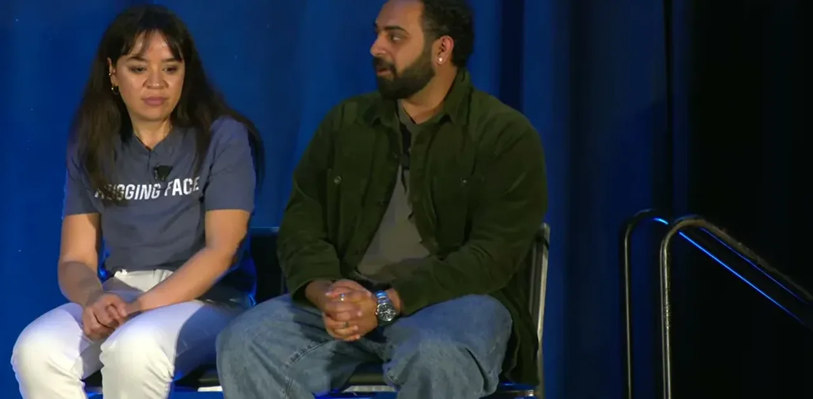
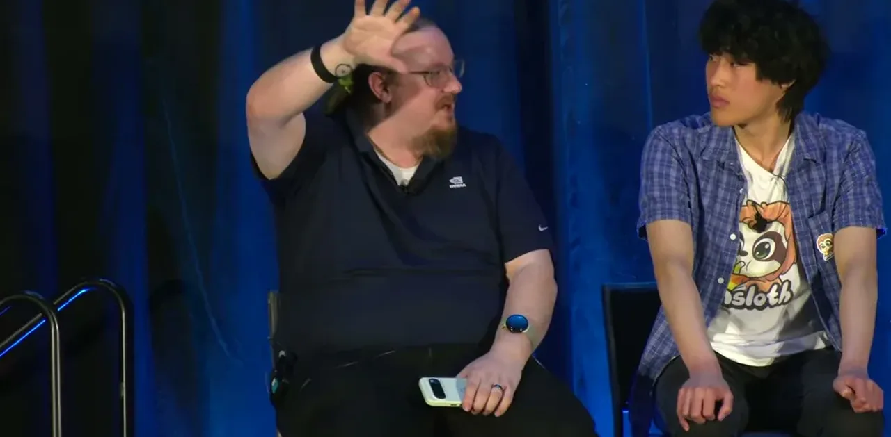
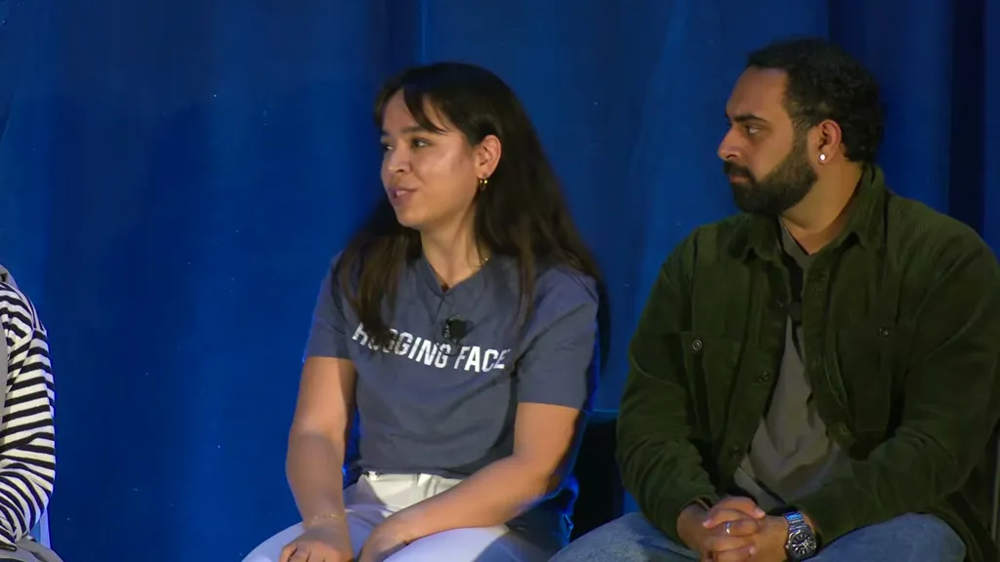
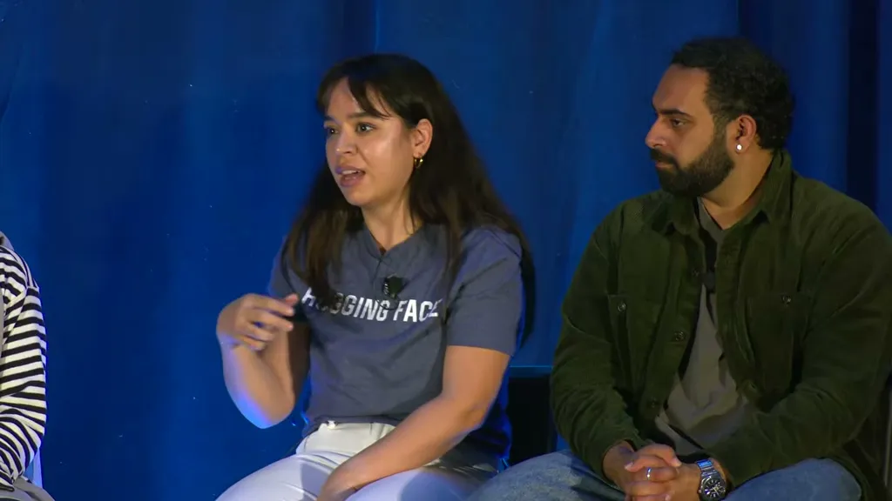
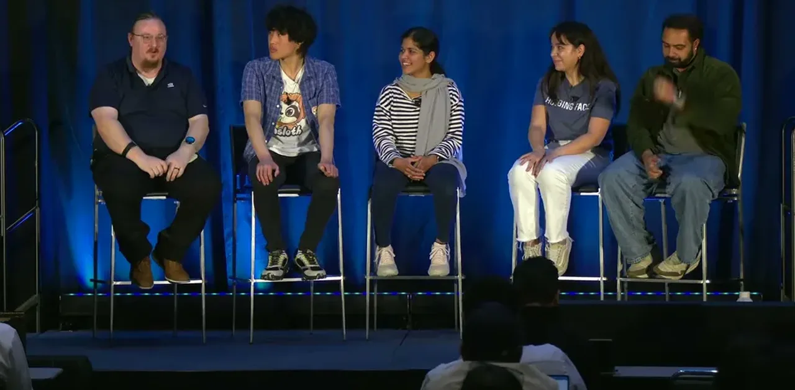
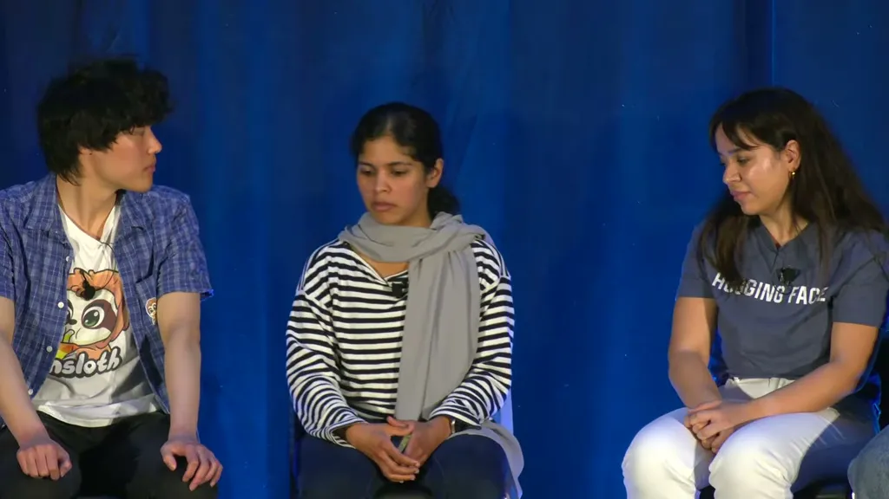
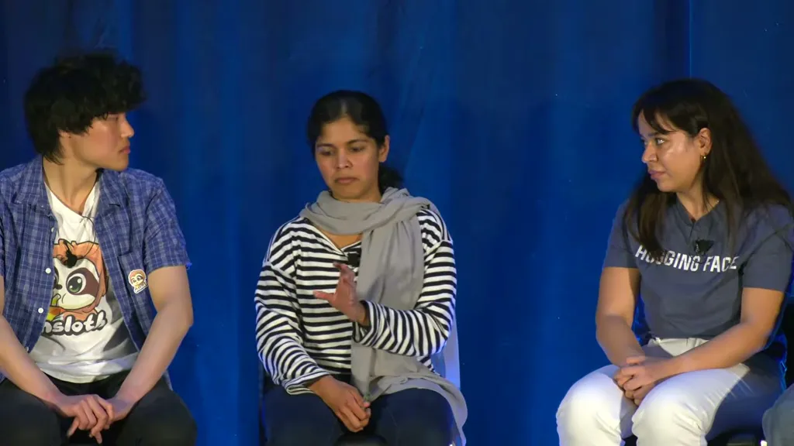


Underlying detail — every claim, typed and timestamped (8)
| Stance | Claim | t |
|---|---|---|
| asserts | Daniel Han says GLM 5.2 can be quantized from 1.5 terabytes down to 250GB, an 86% size reduction. | 03:12 |
| asserts | Selective, layer-aware quantization recovered 76% of overall accuracy even after cutting model size by 86%. | 03:43 |
| asserts | Han identifies Deep Seek R1's release as the moment that made local quantization urgent, since the reasoning model was too large to run locally otherwise. | 04:47 |
| asserts | NVFP4 is a microscaled 4-bit format where every 16 elements share one 8-bit scaling factor. | 16:53 |
| asserts | At matched disk size, a bigger model quantized to 4-bit outperformed a smaller 16-bit model in the comparison cited on the panel. | 22:35 |
| warns | Quantizing linear attention layers can pass ordinary benchmarks yet produce gibberish once tested on real long-context production use. | 36:33 |
| recommends | NVIDIA's model optimizer team says post-training quantization works out of the box for medium and large (20B+) models without special recovery techniques. | 30:51 |
| predicts | Marv (Hugging Face) predicts intelligence moving onto phones as the next frontier for compression. | 39:38 |
Machine-readable copy embedded in this page (script#ontology) and in the corpus ontology.